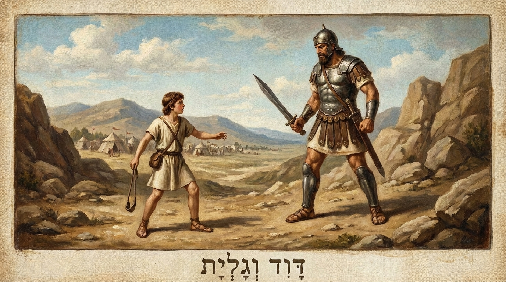

A Transição para a Monarquia
O livro de 1 Samuel relata a transição de Israel da época dos juízes para o estabelecimento da monarquia. A narrativa gira em torno de três figuras principais: o profeta e juiz Samuel, o desobediente rei Saul, e a ascensão do jovem pastor Davi como o rei escolhido por Deus.
Ficha Técnica
- Autor: Desconhecido (a tradição judaica atribui a Samuel, Natã e Gade)
- Tema Principal: A transição para a monarquia, a soberania de Deus sobre os reis e a importância do coração do líder perante o Senhor.
- Versículo-Chave: "O Senhor, contudo, disse a Samuel: 'Não considere sua aparência nem sua altura, pois eu o rejeitei. O Senhor não vê como o homem: o homem vê a aparência, mas o Senhor vê o coração.'" (1 Samuel 16:7)
Estrutura
- A história e ministério de Samuel (Caps. 1-7)
- O reinado e a queda do Rei Saul (Caps. 8-15)
- A unção de Davi e seu conflito com Saul (Caps. 16-31)